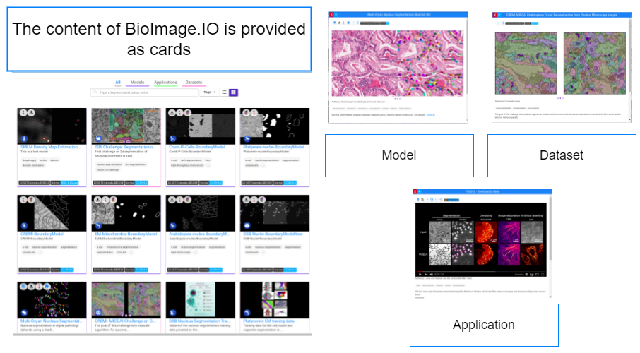
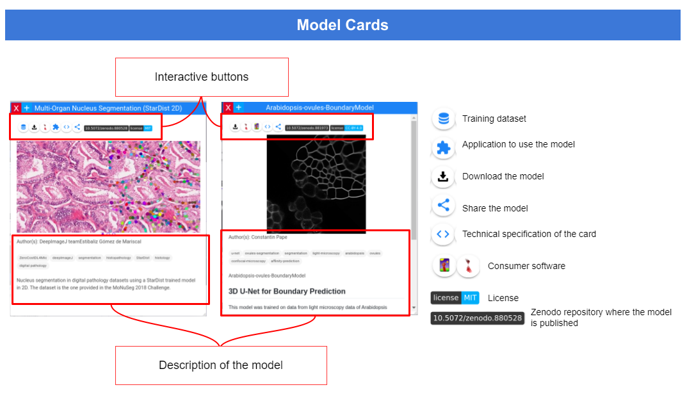

Welcome to the BioImage Model Zoo
Contributors
Questions
What can be found in the BioImage Model Zoo?
Why is it worth trying?
How does it work?
Objectives
Overview
Content
Models
What you can find:
- Pretrained AI models to perform bioimage analysis tasks.
- Reference datasets used to train the models (and to test them!)
- Python notebooks to train or fine-tune your models.
Speaker Notes In the Bioimage Model Zoo you can find pretrained models to perform different bioimage analysis tasks as well as reference datasets used to train the models. Between many different tools and softwares, you can also find python notebooks to train or fine-tune your models easily.
Why is it worth trying?
You can easily run any of the models in user-friendly tools such as Ilastik, deepImageJ, ZeroCostDL4Mic, ImJoy, Fiji, Icy, QuPath or more.
Speaker Notes You can easily run any of the models in user-friendly tools such as Ilastik, deepImageJ, ZeroCostDL4Mic, ImJoy, Fiji, Icy, QuPath or more.
BioImage Model Zoo: Overview
Speaker Notes If you access the BioImage Model Zoo webpage you can find all consumer software that can run the bioimage io models.
BioImage Model Zoo: Overview
Speaker Notes Depending on the task you wish to perform, you may cohose the type of card you are looking for. It will depend on the model, application or dataset you wish to use.
BioImage Model Zoo: Overview
Speaker Notes In the search bar you can write an image processing task, the name of a model or a bioimaging modality. It will suggest you the existing choices.
BioImage Model Zoo: Content

Speaker Notes The content of bioimage io such as models, datasets and applications are provided as cards.
BioImage Model Zoo: Models

Speaker Notes In each model card you can find interactive buttons and the description of the model itself. These buttons will provide you some of the features of that model such as the training dataset or the license. You can also choose the consumer software to run the model, share this model, download it and more.
BioImage Model Zoo: Models
Speaker Notes If you want, you can click on the download button to download the method and click on the consumer software you chose. It will download automatically.
BioImage Model Zoo: Models
If you want to know more about the Bioimage Model Zoo, check out the documentation or contact us!
Speaker Notes If you want to know more about the Bioimage Model Zoo, check our documentation or contact us!